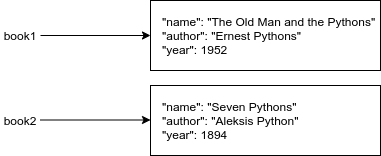

This is the first part of the Advanced Course in Programming. The material is designed to be used with the Visual Studio Code editor, just like the preceding Introduction to Programming course was. If you haven’t use Visual Studio Code before, you will find the installation instructions here, and an introduction to the programming environment from the previous course here.
In the Introduction to Programming course we noticed that it often makes sense to group related data together in our programs. For example, if we are trying to store information about a book, it might make sense to use a tuple or a dictionary to organize the data into a single data structure.
The solution could look like this when using a tuple:
name = "In Search of Lost Typing"
author = "Marcel Pythons"
year = 1992
# Combine these in a tuple
book = (name, author, year)
# Print the name of the book
print(book[0])
In a case like this, the advantage of using a dictionary is that we can use strings instead of indexes as the keys. That is, we can give descriptive names to the items stored in the data structure:
name = "In Search of Lost Typing"
author = "Marcel Pythons"
year = 1992
# Combine these in a dictionary
book = {"name": name, "author": author, "year": year}
# Print the name of the book
print(book["name"])
In both cases we are creating a new object. In programming, the term has the specific meaning of an independent whole, in this case containing some bits of data which are somehow related. Being independent means that any changes made to one object will not affect other objects.
If we were to create two structurally identical representations of books, using dictionaries with identical keys, any changes made to one of them would not have any effect on the other:
book1 = {"name": "The Old Man and the Pythons", "author": "Ernest Pythons", "year": 1952}
book2 = {"name": "Seven Pythons", "author": "Aleksis Python", "year": 1894}
print(book1["name"])
print(book2["name"])
book1["name"] = "A Farewell to ARM Processors"
print(book1["name"])
print(book2["name"])

The data stored in an object can be accessed through methods. A method is a function which operates on the specific object it is attached to. The way to distinguish methods from other functions is the way in which they are called: first you write the name of the object targeted, followed by a dot, and then the name of the method, with arguments if any. For example, the method values returns all the values stored in an object of type dictionary, or dict:
# this creates an object of type dictionary with the name book
book = {"name": "The Old Man and the Pythons", "author": "Ernest Pythons", "year": 1952}
# Print out all the values
# The method call values() is written after the name of the variable
# Remember the dot notation!
for value in book.values():
print(value)
Similarly, string methods target the string object which they are called on. Some examples of string methods include count and find:
name = "Imaginary Irene"
# Print out the number of times the letter I is found
print(name.count("I"))
# The number of letters I found in another string
print("Irreverent Irises in Islington".count("I"))
# The index of the substring Irene
print(name.find("Irene"))
# This string has no such substring
print("A completely different string".find("Irene"))
String methods return values, but they will not change the contents of a string. As stated above, strings in Python are immutable. This does not apply to all methods, however. Python lists are mutable, so Python list methods may change the contents of the list they are called on:
my_list = [1,2,3]
# Add a couple of items
my_list.append(5)
my_list.append(1)
print(my_list)
# Remove the first item
my_list.pop(0)
print(my_list)